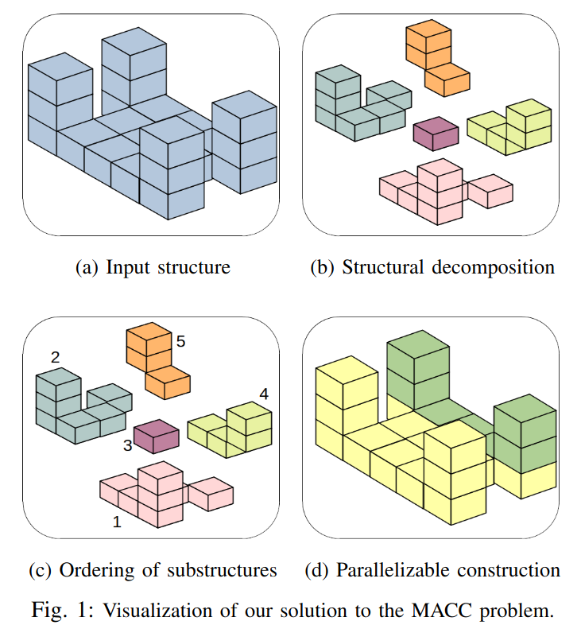

Consider a Multi-Agent Collective Construction (MACC) problem that aims to build a three-dimensional structure comprised of cubic blocks. We use cube-shaped robots that can carry one cubic block at a time, and move forward, reverse, left, and right to an adjacent cell of the same height or climb up and down one cube height. To construct structures taller than one cube, the robots must build supporting stairs made of blocks and remove the stairs once the structure is built. Conventional techniques solve for the entire structure at once and quickly become intractable for larger workspaces and complex structures, especially in a multi-agent setting. To this end, we present a decomposition algorithm that computes substructures based on intrinsic structural dependencies. We use Mixed Integer Linear Programming (MILP) to solve for each substructure and then aggregate the solutions to construct the entire structure.
Extensive testing on 200 randomly generated structures shows an order of magnitude improvement in the solution computation time compared to an MILP approach without decomposition.
Furthermore, we leverage the independence between substructures to detect which substructures can be built in parallel. With this parallelization technique, we illustrate a further improvement in the number of time steps required to complete building the structure. This work is a step towards applying multi-agent collective construction for real-world structures by significantly reducing solution computation time with a bounded increase in the time steps required to build the structure.
Some of our experimental results in a 7x7x3 and 10x10x4 voxel worlds are linked here.